꽃냉장고
꽃냉장고 전기세, 설정 온도와 기계실 관리에서 갈립니다
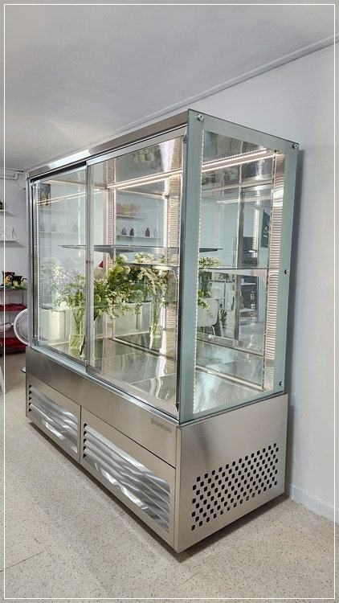
꽃냉장고 전기세를 줄이려면 먼저 설정 온도를 꽃에 맞는 범위로 되돌리고, 기계실 먼지와 배수관을 정기적으로 청소하세요. 여기에 문 여닫는 횟수를 줄이고 햇빛이 드는 자리를 피하면, 생화 상태는 지키면서 기계가 쉬지 못하고 도는 시간을 줄일 수 있습니다.
안녕하세요. 꽃집과 플라워 공방의 꽃쇼케이스를 설계하고 제작하는 한성쇼케이스입니다.
꽃냉장고를 들이고 첫 여름을 보낸 사장님들께서 "전기 요금이 생각보다 많이 나왔다"며 연락을 주시곤 합니다.
꽃냉장고는 음료 냉장고보다 크고 유리 면적도 넓어 신경이 쓰일 수밖에 없죠.
그런데 매장에 가 보면 장비 자체보다 쓰는 방식에서 새는 전기가 더 많은 경우가 흔합니다. 꽃을 오래 두려고 온도를 한껏 낮춰 두었거나, 기계실에 먼지가 수북하거나, 하루 종일 문이 열렸다 닫혔다 하는 모습이죠.
오늘은 꽃냉장고 전기세가 어디서 늘어나는지, 그리고 생화 상태를 해치지 않으면서 줄일 수 있는 방법을 차근차근 짚어 보겠습니다.
1. 설정 온도를 꽃에 맞추기
차가울수록 꽃이 오래갈 것 같아 온도를 최대한 낮추시는 분들이 많습니다. 하지만 생화 보관에 맞는 온도는 대체로 5℃에서 10℃ 사이이고, 너무 낮으면 오히려 꽃잎에 냉해가 생깁니다.
필요 이상으로 낮춘 설정은 콤프레셔를 쉬지 못하게 만들어 전기 사용만 늘립니다. 평균 7℃ 안팎을 기준으로 두고, 열대 식물이나 난류처럼 낮은 온도에 약한 꽃은 따로 두는 편이 꽃에도 전기에도 낫습니다.
- 지금 설정 온도가 몇 도인지 먼저 확인해 보세요.
- 냉해에 약한 꽃은 문 근처나 별도 공간에 두세요.
2. 상치형·하치형별 기계실 관리
꽃냉장고는 기계실과 냉각 장치가 위에 있으면 상치형, 아래에 있으면 하치형이라고 부릅니다. 어느 쪽이든 기계실에 먼지가 쌓이면 열이 빠지지 못해 기계가 과하게 돌고, 설정 온도까지 잘 내려가지 않습니다.
하치형은 바닥 가까이 있어 꽃잎 부스러기와 먼지가 빨리 모이고, 상치형은 위쪽에 물건을 올려 두면 열이 갇힙니다.
한 달에 한 번은 부드러운 브러시나 청소기로 기계실 먼지를 털어 주시고, 상치형이라면 위에 포장 자재를 쌓아 두지 마세요.
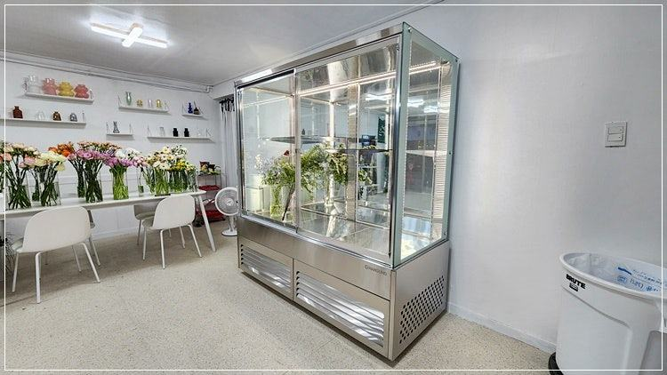
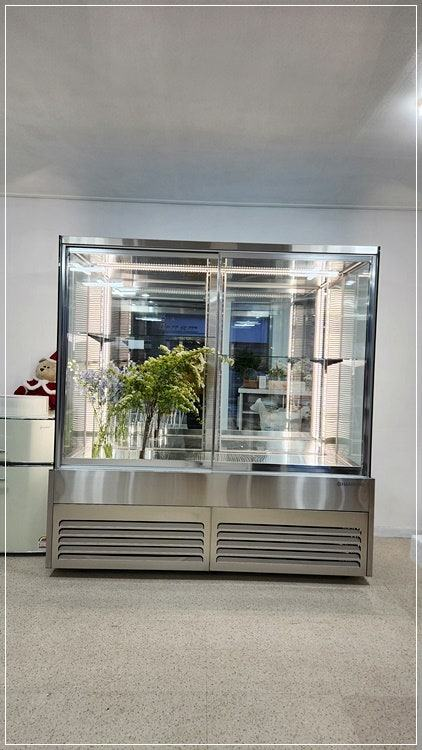
3. 배수관과 문 개방
버킷 물을 갈고 꽃을 다듬다 보면 잎사귀가 배수 라인으로 들어가 막히기 쉽습니다. 물이 고이면 냉각 효율이 떨어지고 고장으로 이어질 수 있으니 배수구를 주기적으로 확인해 주세요.
공방처럼 여러 사람이 자주 꽃을 꺼내는 매장은 문 개방 횟수가 많습니다. 오전에 그날 쓸 꽃을 한꺼번에 꺼내 작업대 버킷에 옮겨 두는 식으로 문 여는 횟수를 줄이면 온도가 덜 흔들립니다.
4. 자리와 조명, 진열 밀도
통창 바로 옆은 꽃냉장고를 두기 좋아 보이는 자리지만, 오후 햇빛이 유리에 오래 닿으면 내부 온도를 지키느라 기계가 더 오래 돕니다.
햇빛이 드는 시간에는 블라인드를 내리거나 자리를 조금 옮겨 보세요.
구형 조명은 열을 내 내부 온도를 올리니 LED인지 확인하고, 꽃을 빽빽하게 채우지 않도록 해 주세요.
공기가 돌 여유가 있어야 냉기가 구석까지 고르게 전달되고 기계도 덜 무리합니다.
- 오후 햇빛이 유리에 닿는 시간을 확인하세요.
- 조명이 LED인지 확인하세요.
- 버킷 사이에 공기가 돌 여유를 두세요.
체크리스트
- 설정 온도를 꽃에 맞는 범위로
- 기계실 먼지 월 1회 청소
- 상치형은 위에 물건 올리지 않기
- 배수구 잎사귀 확인
- 문 개방 횟수 줄이기
- 햇빛·조명 열·진열 밀도 점검
여러 사람이 함께 쓰는 플라워 공방의 대형 하치형 꽃쇼케이스
가정의 달을 앞두고 플라워 공방에 설치한 하치형 꽃쇼케이스입니다. 기계실과 쿨러를 아래쪽에 둔 형태로, 사이즈가 꽤 큰 편이었고 공방 특성상 여러 사람이 수시로 문을 열어 꽃을 꺼내는 환경이었습니다.
꽃이 시들지 않는 것이 가장 중요한 목적이라 내부 온도와 습도를 조절할 수 있게 설계했고, 꽃 색이 생생하게 보이도록 외관도 함께 신경 썼습니다.
상온보다 낮은 온도에서 보관해야 꽃을 시들게 하는 에틸렌 가스 방출을 줄일 수 있기 때문입니다. 배송과 설치는 전문 인력이 맡았고, 설치 뒤 사후 관리 방법도 자세히 안내해 드렸습니다.
문을 자주 여는 매장일수록 이런 관리 습관이 전기 사용과 직결됩니다.
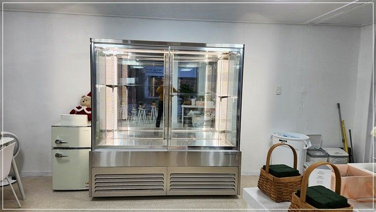
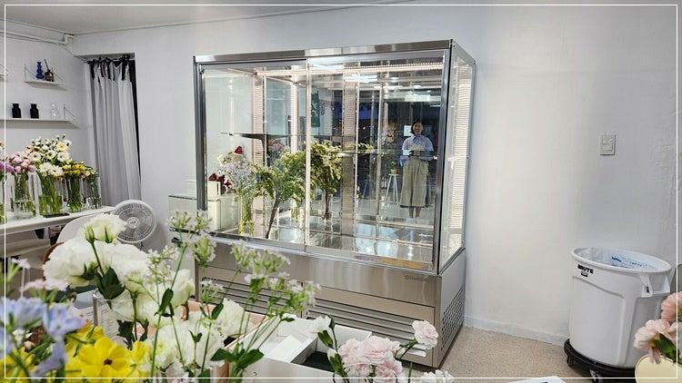
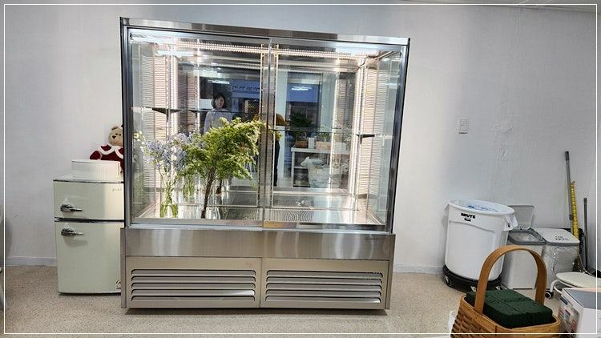
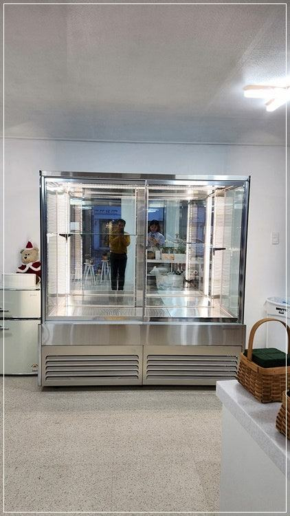
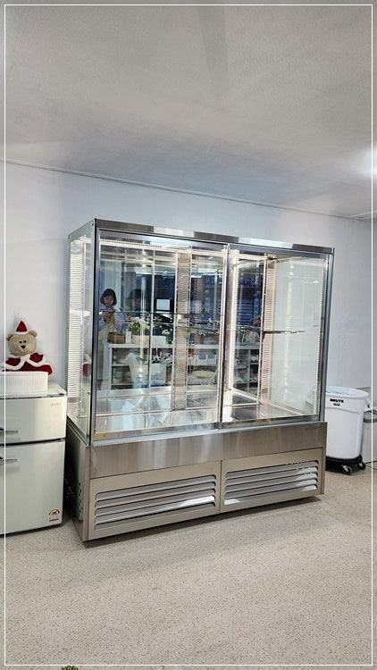
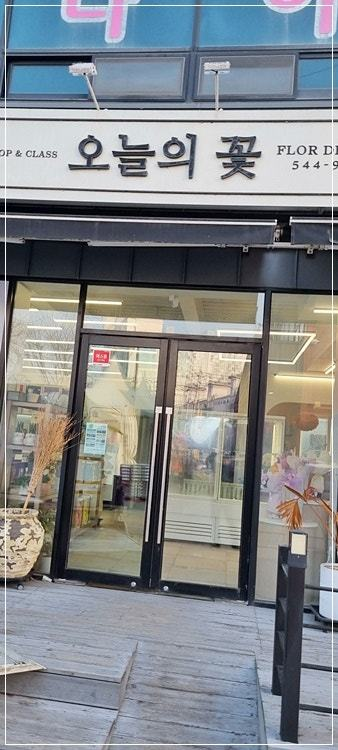
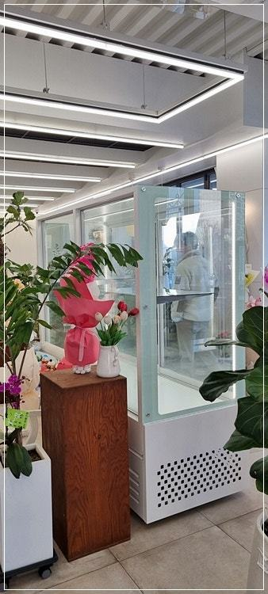
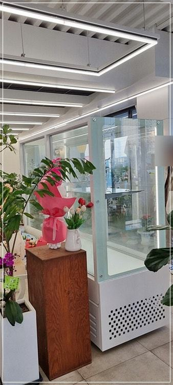
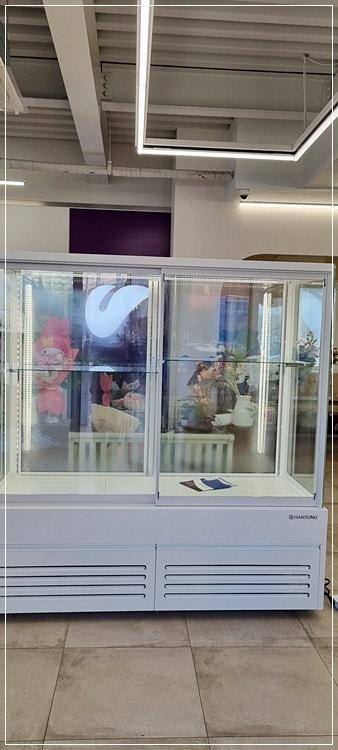
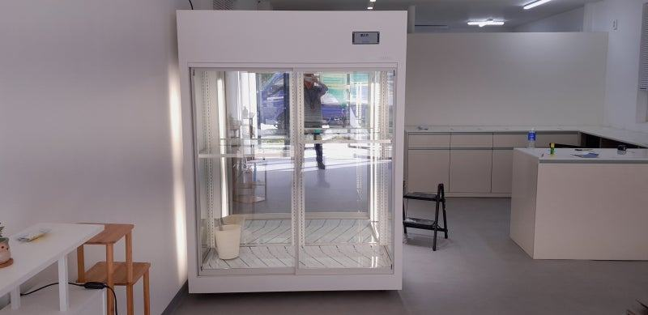
자주 묻는 질문
꽃냉장고 온도를 낮출수록 꽃이 오래가지 않나요?
너무 낮으면 꽃잎에 냉해가 생기고 전기만 더 씁니다. 대체로 5℃에서 10℃ 사이에서 꽃 종류에 맞춰 운용하시는 게 좋습니다.
상치형과 하치형 중 전기가 덜 드는 쪽이 있나요?
구조보다 설치 자리와 관리 상태의 영향이 더 큽니다. 매장 바닥 먼지, 천장 높이, 위쪽 공간 활용 계획을 보고 맞는 쪽을 함께 정해 드립니다.
전기 요금이 갑자기 늘었다면 무엇부터 봐야 하나요?
기계실 먼지와 배수관 막힘, 문 패킹 상태를 먼저 확인해 보세요. 그래도 기계가 쉬지 않고 돈다면 A/S 점검을 요청해 주세요.
매장 조건에 맞춰 만드는 한성쇼케이스
원하시는 제품 사진과 설치할 공간 사진만 보내 주셔도 매장에 맞는 구성을 추천해 드립니다.
- 전국 240여 개 A/S 전담 센터 운영
- 본사 대량 자재 매입으로 품질 대비 합리적인 가격
- 유럽제·삼성 냉각 콤프레셔 적용
- 국내 최초 쇼케이스 전문 디자이너 상주
매장 폭과 원하는 진열 구성을 알려 주세요. 실측과 견적을 안내해 드립니다.
031-986-2458